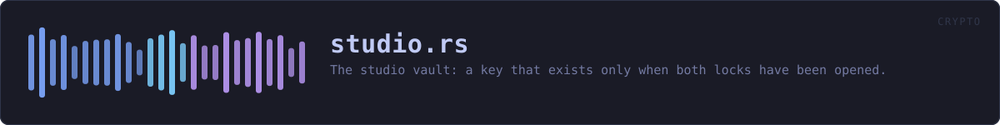

crates/veilvoice-crypto/src/studio.rs
veilvoice-crypto · 936 lines · read the source here · or on GitHub
The studio vault: a key that exists only when both locks have been opened.
The one thing this adds
Everything else in this crate is protected by one secret. The app lock guards the window; a sealed recording is opened by its own passphrase. Each is a single point: whoever has that one secret has the thing it guards.
A StudioKey is derived from both, and from neither alone. A laptop stolen with VeilVoice already unlocked opens nothing here, because the at-rest passphrase was never entered. An at-rest passphrase learned by any means opens nothing here either, because it is not the app lock. Both, at the same time, on the same machine, or the vault stays shut.
How the two are combined
Not concatenated, and not one encrypting the other. Both secrets go into HKDF-SHA256 as input keying material, under a salt that names this vault and its version, and the output is the vault key:
ikm = app_lock_key || at_rest_key
salt = "veilvoice/studio-vault/v1"
key = HKDF-SHA256(ikm, salt, info)HKDF-Extract mixes the whole of the input, so an attacker holding one half and guessing the other faces the full cost of the half they are guessing. Concatenating the two ciphertexts instead, or encrypting once with each key in turn, would let each layer be attacked separately, which is the mistake this shape exists to avoid.
The length of each half is bound into the info string. Without that, ("ab", "c") and ("a", "bc") would produce the same input keying material and therefore the same vault key, which is a collision an attacker chooses rather than finds.
What it is worth, and what it is not
It raises the cost of a stolen machine and of a leaked passphrase, and it turns one compromise into two. Both of those are real.
It does not defeat somebody who is watching this process while both secrets are entered: at that moment the derived key exists in memory, and this crate has never claimed to beat an attacker who is already inside the process. It is page-locked and zeroized like every other secret here, which narrows the window and does not close it. The vault is a second lock on the door, not a guard in the room.
In plain words
The recordings the studio makes are locked with a key made out of two of your passwords at once. Somebody who learns one of them still cannot open them, and neither can somebody who walks off with the computer while the app is open.
What it cannot do is protect you from something already running inside VeilVoice at the moment you type both.
WHAT THIS FILE CONTAINS
936 lines defining 21 functions (11 public), 4 types and 4 constants. Everything below is read out of the source, so it cannot disagree with the code.
The types it owns.
struct StudioKeyline 83 · A key that exists only while both locks are open.struct Entryline 144 · One recording in the vault.struct Studioline 175 · A directory of recordings, sealed under a StudioKey.struct Shapeline 398 · What a decoy vault looks like from outside, so it looks like the real one.
What happens when it runs. These are the ways in: public, and nothing else in this file calls them, so they are what an outside caller reaches first.
StudioKey::deriveline 94 · Derive the vault key from both secrets.StudioKey::exposeline 124 · Borrow the key bytes, for sealing and opening the vault.StudioKey::is_lockedline 134 · Whether the operating system agreed to keep this key out of swap.Studio::openline 187 · Open the vault in dir, creating the directory if it is not there.Studio::dirline 194 · Where the vault lives.Studio::storeline 228 · Seal wav into the vault under name, returning its entry.
reacheslist,new_id,seal,write_index,parse_index,unseal,secret_key,render_index,safe_idStudio::loadline 257 · Open one recording into locked memory.
reachessafe_id,unseal_secret,secret_keyStudio::removeline 266 · Remove one recording and its index entry.
reacheslist,safe_id,write_index,parse_index,unseal,render_index,seal,secret_keyShape::ofline 407 · Measure a real vault, to build decoys that match it.make_decoyline 450 · Fill dir with a vault that never held anything.
reachesnew_id
WHAT CALLS WHAT
The functions this file defines, and the calls between them. An edge means the callee's name appears, called, inside the caller's body. This is a syntactic reading, not a type-resolved one.
The same graph as Mermaid source
%%{init: {"theme":"base","themeVariables":{"background":"#1a1b26","primaryColor":"#1f2335","primaryTextColor":"#c0caf5","primaryBorderColor":"#7aa2f7","secondaryColor":"#16161e","tertiaryColor":"#16161e","lineColor":"#737aa2","textColor":"#c0caf5","mainBkg":"#1f2335","nodeBorder":"#7aa2f7","clusterBkg":"#16161e","clusterBorder":"#2f3549","fontFamily":"ui-monospace, SFMono-Regular, Consolas, monospace","fontSize":"14px"}}}%%
flowchart TD
n_derive(["StudioKey::derive<br/>line 94"])
n_expose(["StudioKey::expose<br/>line 124"])
n_is_locked(["StudioKey::is_locked<br/>line 134"])
n_fmt["Entry::fmt<br/>line 159"]
n_open(["Studio::open<br/>line 187"])
n_dir(["Studio::dir<br/>line 194"])
n_secret_key["Studio::secret_key<br/>line 203"]
n_list["Studio::list<br/>line 214"]
n_store(["Studio::store<br/>line 228"])
n_load(["Studio::load<br/>line 257"])
n_remove(["Studio::remove<br/>line 266"])
n_write_index["Studio::write_index<br/>line 279"]
n_seal["Studio::seal<br/>line 288"]
n_unseal["Studio::unseal<br/>line 297"]
n_unseal_secret["Studio::unseal_secret<br/>line 315"]
n_new_id["new_id<br/>line 334"]
n_safe_id["safe_id<br/>line 349"]
n_render_index["render_index<br/>line 359"]
n_parse_index["parse_index<br/>line 368"]
n_of(["Shape::of<br/>line 407"])
n_make_decoy(["make_decoy<br/>line 450"])
n_list --> n_parse_index
n_list --> n_unseal
n_load --> n_safe_id
n_load --> n_unseal_secret
n_make_decoy --> n_new_id
n_parse_index --> n_safe_id
n_remove --> n_list
n_remove --> n_safe_id
n_remove --> n_write_index
n_seal --> n_secret_key
n_store --> n_list
n_store --> n_new_id
n_store --> n_seal
n_store --> n_write_index
n_unseal --> n_secret_key
n_unseal_secret --> n_secret_key
n_write_index --> n_render_index
n_write_index --> n_seal
click n_derive href "https://github.com/tilas01/veilvoice/blob/main/crates/veilvoice-crypto/src/studio.rs#L94" "open the source"
click n_expose href "https://github.com/tilas01/veilvoice/blob/main/crates/veilvoice-crypto/src/studio.rs#L124" "open the source"
click n_is_locked href "https://github.com/tilas01/veilvoice/blob/main/crates/veilvoice-crypto/src/studio.rs#L134" "open the source"
click n_fmt href "https://github.com/tilas01/veilvoice/blob/main/crates/veilvoice-crypto/src/studio.rs#L159" "open the source"
click n_open href "https://github.com/tilas01/veilvoice/blob/main/crates/veilvoice-crypto/src/studio.rs#L187" "open the source"
click n_dir href "https://github.com/tilas01/veilvoice/blob/main/crates/veilvoice-crypto/src/studio.rs#L194" "open the source"
click n_secret_key href "https://github.com/tilas01/veilvoice/blob/main/crates/veilvoice-crypto/src/studio.rs#L203" "open the source"
click n_list href "https://github.com/tilas01/veilvoice/blob/main/crates/veilvoice-crypto/src/studio.rs#L214" "open the source"
click n_store href "https://github.com/tilas01/veilvoice/blob/main/crates/veilvoice-crypto/src/studio.rs#L228" "open the source"
click n_load href "https://github.com/tilas01/veilvoice/blob/main/crates/veilvoice-crypto/src/studio.rs#L257" "open the source"
click n_remove href "https://github.com/tilas01/veilvoice/blob/main/crates/veilvoice-crypto/src/studio.rs#L266" "open the source"
click n_write_index href "https://github.com/tilas01/veilvoice/blob/main/crates/veilvoice-crypto/src/studio.rs#L279" "open the source"
click n_seal href "https://github.com/tilas01/veilvoice/blob/main/crates/veilvoice-crypto/src/studio.rs#L288" "open the source"
click n_unseal href "https://github.com/tilas01/veilvoice/blob/main/crates/veilvoice-crypto/src/studio.rs#L297" "open the source"
click n_unseal_secret href "https://github.com/tilas01/veilvoice/blob/main/crates/veilvoice-crypto/src/studio.rs#L315" "open the source"
click n_new_id href "https://github.com/tilas01/veilvoice/blob/main/crates/veilvoice-crypto/src/studio.rs#L334" "open the source"
click n_safe_id href "https://github.com/tilas01/veilvoice/blob/main/crates/veilvoice-crypto/src/studio.rs#L349" "open the source"
click n_render_index href "https://github.com/tilas01/veilvoice/blob/main/crates/veilvoice-crypto/src/studio.rs#L359" "open the source"
click n_parse_index href "https://github.com/tilas01/veilvoice/blob/main/crates/veilvoice-crypto/src/studio.rs#L368" "open the source"
click n_of href "https://github.com/tilas01/veilvoice/blob/main/crates/veilvoice-crypto/src/studio.rs#L407" "open the source"
click n_make_decoy href "https://github.com/tilas01/veilvoice/blob/main/crates/veilvoice-crypto/src/studio.rs#L450" "open the source"
classDef entry fill:#1f2335,stroke:#7aa2f7,color:#c0caf5
class n_derive,n_expose,n_is_locked,n_open,n_dir,n_store,n_load,n_remove,n_of,n_make_decoy entry
classDef api fill:#1f2335,stroke:#7dcfff,color:#c0caf5
class n_list api
classDef helper fill:#1f2335,stroke:#bb9af7,color:#c0caf5
class n_fmt,n_secret_key,n_write_index,n_seal,n_unseal,n_unseal_secret,n_new_id,n_safe_id,n_render_index,n_parse_index helperThis site loads no third-party script, so it cannot run Mermaid; the diagram above is the same nodes and edges drawn by the generator instead. GitHub renders the source below directly.
ITEMS
| Item | Line | Documentation |
|---|---|---|
KEY_LEN pub const | 67 | Bytes in a studio vault key. |
SALT const | 73 | Names this construction and its version in the HKDF salt. |
INFO const | 76 | The HKDF info label. |
StudioKey pub struct | 83 | A key that exists only while both locks are open. |
StudioKey::derive pub fn | 94 | Derive the vault key from both secrets. |
StudioKey::expose pub fn | 124 | Borrow the key bytes, for sealing and opening the vault. |
StudioKey::is_locked pub fn | 134 | Whether the operating system agreed to keep this key out of swap. |
Entry pub struct | 144 | One recording in the vault. |
Entry::fmt fn | 159 | |
Studio pub struct | 175 | A directory of recordings, sealed under a StudioKey. |
INDEX const | 183 | The index file's name. |
Studio::open pub fn | 187 | Open the vault in dir, creating the directory if it is not there. |
Studio::dir pub fn | 194 | Where the vault lives. |
Studio::secret_key fn | 203 | The vault key as a Secret, for the AEAD. |
Studio::list pub fn | 214 | Every recording in the vault, oldest first. |
Studio::store pub fn | 228 | Seal wav into the vault under name, returning its entry. |
Studio::load pub fn | 257 | Open one recording into locked memory. |
Studio::remove pub fn | 266 | Remove one recording and its index entry. |
Studio::write_index fn | 279 | |
Studio::seal fn | 288 | Seal with a fresh nonce, binding aad so a file cannot be moved to another identity inside the same vault and still open. |
Studio::unseal fn | 297 | |
Studio::unseal_secret fn | 315 | The same, decrypting straight into locked memory. |
new_id fn | 334 | A random, opaque identifier: 20 lower-case letters and digits that say nothing about what they name. |
safe_id fn | 349 | Whether id is one this vault could have produced. |
render_index fn | 359 | The index, as lines. |
parse_index fn | 368 | |
Shape pub struct | 398 | What a decoy vault looks like from outside, so it looks like the real one. |
Shape::of pub fn | 407 | Measure a real vault, to build decoys that match it. |
make_decoy pub fn | 450 | Fill dir with a vault that never held anything. |